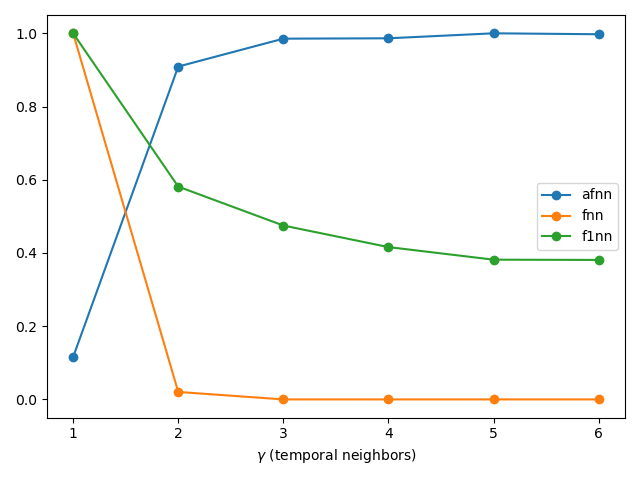

Optimal DCE Parameters
This page discusses and provides algorithms for estimating optimal parameters to do Delay Coordinates Embedding (DCE) with.
The approaches can be grouped into two schools:
- Independent, where one tries to independently find the best value for a delay time
τand an embedding dimensiond. - Unified, where at the same time an optimal combination of
τ, dis found.
The independent approach is something "old school", while recent scientific research has shifted almost exclusively to unified approaches.
In addition, the unified approaches are the only ones that can accommodate multi-variate inputs. This means that if you have multiple measured input timeseries, you should be able to take advantage of all of them for the best possible embedding of the dynamical system's set.
Independent delay time
DelayEmbeddings.estimate_delay — Functionestimate_delay(s, method::String [, τs = 1:2:100]; kwargs...) -> τEstimate an optimal delay to be used in reconstruct or embed. The method can be one of the following:
"ac_zero": first delay at which the auto-correlation function becomes <0."ac_min": delay of first minimum of the auto-correlation function."mi_min": delay of first minimum of mutual information ofswith itself (shifted for variousτs). Keywordsnbins, binwidthare propagated intomutualinformation."exp_decay":exponential_decay_fitof the correlation function rounded to an integer (uses least squares onc(t) = exp(-t/τ)to findτ)."exp_extrema": same as above but the exponential fit is done to the absolute value of the local extrema of the correlation function.
Both the mutual information and correlation function (autocor) are computed only for delays τs. This means that the min methods can never return the first value of τs!
The method mi_min is significantly more accurate than the others and also returns good results for most timeseries. It is however the slowest method (but still quite fast!).
DelayEmbeddings.exponential_decay_fit — Functionexponential_decay_fit(x, y, weight = :equal) -> τPerform a least square fit of the form y = exp(-x/τ) and return τ. Taken from: http://mathworld.wolfram.com/LeastSquaresFittingExponential.html. Assumes equal lengths of x, y and that y ≥ 0.
To use the method that gives more weight to small values of y, use weight = :small.
Mutual Information
DelayEmbeddings.mutualinformation — Functionmutualinformation(s, τs[; nbins, binwidth])Calculate the mutual information between the time series s and its images delayed by τ points for τ ∈ τs, using an improvement of the method outlined by Fraser & Swinney in[Fraser1986].
Description
The joint space of s and its τ-delayed image (sτ) is partitioned as a rectangular grid, and the mutual information is computed from the joint and marginal frequencies of s and sτ in the grid as defined in [1]. The mutual information values are returned in a vector of the same length as τs.
If any of the optional keyword parameters is given, the grid will be a homogeneous partition of the space where s and sτ are defined. The margins of that partition will be divided in a number of bins equal to nbins, such that the width of each bin will be binwidth, and the range of nonzero values of s will be in the centre. If only of those two parameters is given, the other will be automatically calculated to adjust the size of the grid to the area where s and sτ are nonzero.
If no parameter is given, the space will be partitioned by a recursive bisection algorithm based on the method given in [1].
Notice that the recursive method of [1] evaluates the joint frequencies of s and sτ in each cell resulting from a partition, and stops when the data points are uniformly distributed across the sub-partitions of the following levels. For performance and stability reasons, the automatic partition method implemented in this function is only used to divide the axes of the grid, using the marginal frequencies of s.
Independent embedding dimension
DelayEmbeddings.estimate_dimension — Functionestimate_dimension(s::AbstractVector, τ::Int, γs = 1:5, method = "afnn"; kwargs...)Compute a quantity that can estimate an optimal amount of temporal neighbors γ to be used in reconstruct or embed.
Description
Given the scalar timeseries s and the embedding delay τ compute a quantity for each γ ∈ γs based on the "nearest neighbors" in the embedded time series.
The quantity that is calculated depends on the algorithm defined by the string method:
"afnn"(default) is Cao's "Averaged False Nearest Neighbors" method[Cao1997], which gives a ratio of distances between nearest neighbors. This ratio saturates around1.0near the optimal value ofγ(seeafnn)."fnn"is Kennel's "False Nearest Neighbors" method[Kennel1992], which gives the number of points that cease to be "nearest neighbors" when the dimension increases. This number drops down to zero near the optimal value ofγ. This method accepts the keyword argumentsrtolandatol, which stand for the "tolerances" required by Kennel's algorithm (seefnn)."f1nn"is Krakovská's "False First Nearest Neighbors" method[Krakovská2015], which gives the ratio of pairs of points that cease to be "nearest neighbors" when the dimension increases. This number drops down to zero near the optimal value ofγ(seef1nn).
"afnn" and "f1nn" also support the metric keyword, which can be any of Cityblock(), Euclidean(), Chebyshev(). This metric is used both for computing the nearest neighbors (KDTrees) as well as the distances necessary for Cao's method (eqs. (2, 3) of [1]). Defaults to Euclidean() (note that [1] used Chebyshev).
Please be aware that in DynamicalSystems.jl γ stands for the amount of temporal neighbors and not the embedding dimension (D = γ + 1, see also embed).
Example
using DynamicalSystems, PyPlot
ds = Systems.roessler()
tr = trajectory(ds, 1000.0; dt = 0.05)
τ = estimate_delay(tr[:, 1], "mi_min") # first minimum of mutual information
figure();
for method in ["afnn", "fnn", "f1nn"]
Ds = estimate_dimension(tr[:, 1], τ, 1:6, method)
plot(1:6, Ds ./ maximum(Ds), label = method, marker = "o")
end
legend(); xlabel("\$\\gamma\$ (temporal neighbors)")
tight_layout()
Functions
DelayEmbeddings.fnn — Functionfnn(s::AbstractVector, τ:Int, γs = 1:5; rtol=10.0, atol=2.0)Calculate the number of "false nearest neighbors" (FNN) of the datasets created from s with a sequence of τ-delayed temporal neighbors.
Description
Given a dataset made by embedding s with γ temporal neighbors and delay τ, the "false nearest neighbors" (FNN) are the pairs of points that are nearest to each other at dimension γ, but are separated at dimension γ+1. Kennel's criteria for detecting FNN are based on a threshold for the relative increment of the distance between the nearest neighbors (rtol, eq. 4 in[Kennel1992]), and another threshold for the ratio between the increased distance and the "size of the attractor" (atol, eq. 5 in[Kennel1992]). These thresholds are given as keyword arguments.
The returned value is a vector with the number of FNN for each γ ∈ γs. The optimal value for γ is found at the point where the number of FNN approaches zero.
See also: estimate_dimension, afnn, f1nn.
DelayEmbeddings.afnn — Functionafnn(s::AbstractVector, τ:Int, γs = 1:5, metric=Euclidean())Compute the parameter E₁ of Cao's "averaged false nearest neighbors" method for determining the minimum embedding dimension of the time series s, with a sequence of τ-delayed temporal neighbors.
Description
Given the scalar timeseries s and the embedding delay τ compute the values of E₁ for each γ ∈ γs, according to Cao's Method (eq. 3 of [1]).
This quantity is a ratio of the averaged distances between the nearest neighbors of the reconstructed time series, which quantifies the increment of those distances when the number of temporal neighbors changes from γ to γ+1.
Return the vector of all computed E₁s. To estimate a good value for γ from this, find γ for which the value E₁ saturates at some value around 1.
Note: This method does not work for datasets with perfectly periodic signals.
See also: estimate_dimension, fnn, f1nn.
DelayEmbeddings.f1nn — Functionf1nn(s::AbstractVector, τ:Int, γs = 1:5, metric = Euclidean())Calculate the ratio of "false first nearest neighbors" (FFNN) of the datasets created from s with a sequence of τ-delayed temporal neighbors.
Description
Given a dataset made by embedding s with γ temporal neighbors and delay τ, the "false first nearest neighbors" (FFNN) are the pairs of points that are nearest to each other at dimension γ that cease to be nearest neighbors at dimension γ+1.
The returned value is a vector with the ratio between the number of FFNN and the number of points in the dataset for each γ ∈ γs. The optimal value for γ is found at the point where this ratio approaches zero.
See also: estimate_dimension, afnn, fnn.
DelayEmbeddings.stochastic_indicator — Functionstochastic_indicator(s::AbstractVector, τ:Int, γs = 1:4) -> E₂sCompute an estimator for apparent randomness in a reconstruction with γs temporal neighbors.
Description
Given the scalar timeseries s and the embedding delay τ compute the values of E₂ for each γ ∈ γs, according to Cao's Method (eq. 5 of [Cao1997]).
Use this function to confirm that the input signal is not random and validate the results of estimate_dimension. In the case of random signals, it should be E₂ ≈ 1 ∀ γ.
Unified approach
Several algorithms have been created to implement a unified approach to delay coordinates embedding. You can find some implementations below:
DelayEmbeddings.pecora — Functionpecora(s, τs, js; kwargs...) → ⟨ε★⟩, ⟨Γ⟩Compute the (average) continuity statistic ⟨ε★⟩ and undersampling statistic ⟨Γ⟩ according to Pecora et al.[Pecoral2007] (A unified approach to attractor reconstruction), for a given input s (timeseries or Dataset) and input generalized embedding defined by (τs, js), according to genembed. The continuity statistic represents functional independence between the components of the existing embedding and one additional timeseries. The returned results are matrices with size TxJ.
Keyword arguments
delays = 0:50: Possible time delay valuesdelays(in sampling time units). For each of theτ's indelaysthe continuity-statistic⟨ε★⟩gets computed. Ifundersampling = true(see further down), also the undersampling statistic⟨Γ⟩gets returned for all considered delay values.J = 1:dimension(s): calculate for all timeseries indices inJ. If inputsis a timeseries, this is always just 1.samplesize::Real = 0.1: determine the fraction of all phase space points (=length(s)) to be considered (fiducial points v) to average ε★ to produce⟨ε★⟩, ⟨Γ⟩K::Int = 13: the amount of nearest neighbors in the δ-ball (read algorithm description). Must be at least 8 (in order to gurantee a valid statistic).⟨ε★⟩is computed taking the minimum result over allk ∈ K.metric = Chebyshev(): metrix with which to find nearest neigbhors in the input embedding (ℝᵈ space,d = length(τs)).w = 1: Theiler window (neighbors in time with indexwclose to the point, that are excluded from being true neighbors).w=0means to exclude only the point itself, and no temporal neighbors.undersampling = false: whether to calculate the undersampling statistic or not (if not, zeros are returned for⟨Γ⟩). Calculating⟨Γ⟩is thousands of times slower than⟨ε★⟩.db::Int = 100: Amount of bins used into calculating the histograms of each timeseries (for the undersampling statistic).α::Real = 0.05: The significance level for obtaining the continuity statisticp::Real = 0.5: The p-parameter for the binomial distribution used for the computation of the continuity statistic.
Description
Notice that the full algorithm is too large to discuss here, and is written in detail (several pages!) in the source code of pecora.
DelayEmbeddings.uzal_cost — Functionuzal_cost(Y::Dataset; kwargs...) → LCompute the L-statistic L for input dataset Y according to Uzal et al.[Uzal2011], based on theoretical arguments on noise amplification, the complexity of the reconstructed attractor and a direct measure of local stretch which constitutes an irrelevance measure. It serves as a cost function of a phase space trajectory/embedding and therefore allows to estimate a "goodness of a embedding" and also to choose proper embedding parameters, while minimizing L over the parameter space. For receiving the local cost function L_local (for each point in phase space - not averaged), use uzal_cost_local(...).
Keyword arguments
samplesize = 0.5: Number of considered fiducial points v as a fraction of input phase space trajectoryY's length, in order to average the conditional variances and neighborhood sizes (read algorithm description) to produceL.K = 3: the amount of nearest neighbors considered, in order to compute σ_k^2 (read algorithm description). If given a vector, minimum result over allk ∈ Kis returned.metric = Euclidean(): metric used for finding nearest neigbhors in the input phase space trajectory `Y.w = 1: Theiler window (neighbors in time with indexwclose to the point, that are excluded from being true neighbors).w=0means to exclude only the point itself, and no temporal neighbors.Tw = 40: The time horizon (in sampling units) up to which E_k^2 gets computed and averaged over (read algorithm description).
Description
The L-statistic based on theoretical arguments on noise amplification, the complexity of the reconstructed attractor and a direct measure of local stretch which constitutes an irrelevance measure. Technically, it is the logarithm of the product of σ-statistic and a normalization statistic α:
L = log10(σ*α)
The σ-statistic is computed as follows. σ=√σ² and σ²=E²/ϵ². E² approximates the conditional variance at each point in phase space and for a time horizon T∈Tw, using K nearest neighbors. For each reference point of the phase space trajectory, the neighborhood consists of the reference point itself and its K+1 nearest neighbors. E² measures how strong a neighborhood expands during T time steps. E² is averaged over many time horizons T=1:Tw. Consequently, ϵ² is the size of the neighborhood at the reference point itself and is defined as the mean pairwise distance of the neighborhood. Finally, σ² gets averaged over a range of reference points on the attractor, which is controlled by samplesize. This is just for performance reasons and the most accurate result will obviously be gained when setting samplesize=1.0
The α-statistic is a normalization factor, such that σ's from different reconstructions can be compared. α² is defined as the inverse of the sum of the inverse of all ϵ²'s for all considered reference points.
DelayEmbeddings.garcia_almeida_embedding — Functiongarcia_almeida_embedding(s; kwargs...) → Y, τ_vals, ts_vals, FNNs ,NSA unified approach to properly embed a time series (Vector type) or a set of time series (Dataset type) based on the papers of Garcia & Almeida [Garcia2005a],[Garcia2005b].
Keyword arguments
τs= 0:50: Possible delay valuesτs(in sampling time units). For each of theτs's the N-statistic gets computed.w::Int = 1: Theiler window (neighbors in time with indexwclose to the point, that are excluded from being true neighbors).w=0means to exclude only the point itself, and no temporal neighbors.r1 = 10: The threshold, which defines the factor of tolerable stretching for the dE1-statistic (see algorithm description in [`garciaembedding_cycle`](@ref)).r2 = 2: The threshold for the tolerable relative increase of the distance between the nearest neighbors, when increasing the embedding dimension.fnn_thres= 0.05: A threshold value defining a sufficiently small fraction of false nearest neighbors, in order to the let algorithm terminate and stop the embedding procedure (`0 ≤ fnn_thres < 1).T::Int = 1: The forward time step (in sampling units) in order to compute thed_E2-statistic (see algorithm description). Note that in the paper this is not a free parameter and always set toT=1.metric = Euclidean(): metric used for finding nearest neigbhors in the input phase space trajectoryY.max_num_of_cycles = 50: The algorithm will stop after that many cycles no matter what.
Description
The method works iteratively and gradually builds the final embedding vectors Y. Based on the N-statistic garcia_embedding_cycle the algorithm picks an optimal delay value τ for each embedding cycle as the first local minimum of N. In case of multivariate embedding, i.e. when embedding a set of time series (s::Dataset), the optimal delay value τ is chosen as the first minimum from all minimum's of all considered N-statistics for each embedding cycle. The range of considered delay values is determined in τs and for the nearest neighbor search we respect the Theiler window w. After each embedding cycle the FNN-statistic FNNs [Hegger1999][Kennel1992] is being checked and as soon as this statistic drops below the threshold fnn_thres, the algorithm breaks. In order to increase the practability of the method the algorithm also breaks, when the FNN-statistic FNNs increases . The final embedding vector is stored in Y (Dataset). The chosen delay values for each embedding cycle are stored in the τ_vals and the according time series number chosen for the according delay value in τ_vals is stored in ts_vals. For univariate embedding (s::Vector) ts_vals is a vector of ones of length τ_vals, because there is simply just one time series to choose from. The function also returns the N-statistic NS for each embedding cycle as an Array of Vectors.
Notice that we were not able to reproduce the figures from the papers with our implementation (which nevertheless we believe is the correct one).
DelayEmbeddings.mdop_embedding — Functionmdop_embedding(s::Vector; kwargs...) → Y, τ_vals, ts_vals, FNNs, βSMDOP (for "maximizing derivatives on projection") is a unified approach to properly embed a timeseries or a set of timeseries (Dataset) based on the paper of Chetan Nichkawde [Nichkawde2013].
Keyword arguments
τs= 0:50: Possible delay valuesτs. For each of theτs's the β-statistic gets computed.w::Int = 1: Theiler window (neighbors in time with indexwclose to the point, that are excluded from being true neighbors).w=0means to exclude only the point itself, and no temporal neighbors.fnn_thres::Real= 0.05: A threshold value defining a sufficiently small fraction of false nearest neighbors, in order to the let algorithm terminate and stop the embedding procedure (`0 ≤ fnn_thres < 1).r::Real = 2: The threshold for the tolerable relative increase of the distance between the nearest neighbors, when increasing the embedding dimension.max_num_of_cycles = 50: The algorithm will stop after that many cycles no matter what.
Description
The method works iteratively and gradually builds the final embedding Y. Based on the beta_statistic the algorithm picks an optimal delay value τ for each embedding cycle as the global maximum of β. In case of multivariate embedding, i.e. when embedding a set of time series (s::Dataset), the optimal delay value τ is chosen as the maximum from all maxima's of all considered β-statistics for each possible timeseries. The range of considered delay values is determined in τs and for the nearest neighbor search we respect the Theiler window w.
After each embedding cycle the FNN-statistic FNNs [Hegger1999][Kennel1992] is being checked and as soon as this statistic drops below the threshold fnn_thres, the algorithm terminates. In order to increase the practability of the method the algorithm also terminates when the FNN-statistic FNNs increases.
The final embedding is returned as Y. The chosen delay values for each embedding cycle are stored in the τ_vals and the according timeseries index chosen for the the respective according delay value in τ_vals is stored in ts_vals. βS, FNNs are returned for clarity and double-checking, since they are computed anyway. In case of multivariate embedding, βS will store all β-statistics for all available time series in each embedding cycle. To double-check the actual used β-statistics in an embedding cycle 'k', simply βS[k][:,ts_vals[k+1]].
Low-level functions of unified approach
DelayEmbeddings.n_statistic — Functionn_statistic(Y, s; kwargs...) → N, d_E1Perform one embedding cycle according to the method proposed in [Garcia2005a] for a given phase space trajectory Y (of type Dataset) and a time series s (of typeVector). Return the proposed N-StatisticNand all nearest neighbor distancesd_E1for each point of the input phase space trajectoryY. Note thatY` is a single time series in case of the first embedding cycle.
Keyword arguments
τs= 0:50: Considered delay valuesτs(in sampling time units). For each of theτs's the N-statistic gets computed.r = 10: The threshold, which defines the factor of tolerable stretching for the d_E1-statistic (see algorithm description).T::Int = 1: The forward time step (in sampling units) in order to compute thed_E2-statistic (see algorithm description). Note that in the paper this is not a free parameter and always set toT=1.w::Int = 0: Theiler window (neighbors in time with indexwclose to the point, that are excluded from being true neighbors).w=0means to exclude only the point itself, and no temporal neighbors. Note that in the paper this is not a free parameter and alwaysw=0.metric = Euclidean(): metric used for finding nearest neigbhors in the input phase space trajectoryY.
Description
For a range of possible delay values τs one constructs a temporary embedding matrix. That is, one concatenates the input phase space trajectory Y with the τ-lagged input time series s. For each point on the temporary trajectory one computes its nearest neighbor, which is denoted as the d_E1-statistic for a specific τ. Now one considers the distance between the reference point and its nearest neighbor T sampling units ahead and calls this statistic d_E2. [Garcia2005a] strictly use T=1, so they forward each reference point and its corresponding nearest neighbor just by one (!) sampling unit. Here it is a free parameter.
The N-statistic is then the fraction of d_E2/d_E1-pairs which exceed a threshold r.
Plotted vs. the considered τs-values it is proposed to pick the τ-value for this embedding cycle as the value, where N has its first local minimum.
DelayEmbeddings.beta_statistic — Functionbeta_statistic(Y::Dataset, s::Vector) [, τs, w]) → βCompute the β-statistic β for input state space trajectory Y and a timeseries s according to Nichkawde [Nichkawde2013], based on estimating derivatives on a projected manifold. For a range of delay values τs, β gets computed and its maximum over all considered τs serves as the optimal delay considered in this embedding cycle.
Arguments τs, w as in mdop_embedding.
Description
The β-statistic is based on the geometrical idea of maximal unfolding of the reconstructed attractor and is tightly related to the False Nearest Neighbor method ([Kennel1992]). In fact the method eliminates the maximum amount of false nearest neighbors in each embedding cycle. The idea is to estimate the absolute value of the directional derivative with respect to a possible new dimension in the reconstruction process, and with respect to the nearest neighbor, for all points of the state space trajectory:
ϕ'(τ) = Δϕd(τ) / Δxd
Δxd is simply the Euclidean nearest neighbor distance for a reference point with respect to the given Theiler window w. Δϕd(τ) is the distance of the reference point to its nearest neighbor in the one dimensional time series s, for the specific τ. Δϕ_d(τ) = |s(i+τ)-s(j+τ)|, with i being the index of the considered reference point and j the index of its nearest neighbor.
Finally,
β = log β(τ) = ⟨log₁₀ ϕ'(τ)⟩ ,
with ⟨.⟩ being the mean over all reference points. When one chooses the maximum of β over all considered τ's, one obtains the optimal delay value for this embedding cycle. Note that in the first embedding cycle, the input state space trajectory Y can also be just a univariate time series.
DelayEmbeddings.mdop_maximum_delay — Functionmdop_maximum_delay(s, tw = 1:50, samplesize = 1.0)) -> τ_max, LCompute an upper bound for the search of optimal delays, when using mdop_embedding mdop_embedding or beta_statistic beta_statistic.
Description
The input time series s gets embedded with unit lag and increasing dimension, for dimensions (or time windows) tw (RangeObject). For each of such a time window the L-statistic from Uzal et al. [Uzal2011] will be computed. samplesize determines the fraction of points to be considered in the computation of L (see uzal_cost). When this statistic reaches its global minimum the maximum delay value τ_max gets returned. When s is a multivariate Dataset, τ_max will becomputed for all timeseries of that Dataset and the maximum value will be returned. The returned L-statistic has size (length(tw), size(s,2)).
- Fraser1986Fraser A.M. & Swinney H.L. "Independent coordinates for strange attractors from mutual information" Phys. Rev. A 33(2), 1986, 1134:1140.
- Cao1997Liangyue Cao, Physica D, pp. 43-50 (1997)
- Kennel1992M. Kennel et al., Phys. Review A 45(6), (1992).
- Krakovská2015Anna Krakovská et al., J. Complex Sys. 932750 (2015)
- Pecora2007Pecora, L. M., Moniz, L., Nichols, J., & Carroll, T. L. (2007). A unified approach to attractor reconstruction. Chaos 17(1).
- Uzal2011Uzal, L. C., Grinblat, G. L., Verdes, P. F. (2011). Optimal reconstruction of dynamical systems: A noise amplification approach. Physical Review E 84, 016223.
- Garcia2005aGarcia, S. P., Almeida, J. S. (2005). Nearest neighbor embedding with different time delays. Physical Review E 71, 037204.
- Garcia2005bGarcia, S. P., Almeida, J. S. (2005). Multivariate phase space reconstruction by nearest neighbor embedding with different time delays. Physical Review E 72, 027205.
- Nichkawde2013Nichkawde, Chetan (2013). Optimal state-space reconstruction using derivatives on projected manifold. Physical Review E 87, 022905.
- Hegger1999Hegger, Rainer and Kantz, Holger (1999). Improved false nearest neighbor method to detect determinism in time series data. Physical Review E 60, 4970.
- Kennel1992Kennel, M. B., Brown, R., Abarbanel, H. D. I. (1992). Determining embedding dimension for state-space reconstruction using a geometrical construction. Phys. Rev. A 45, 3403.
- Garcia2005aGarcia, S. P., Almeida, J. S. (2005). Nearest neighbor embedding with different time delays. Physical Review E 71, 037204.
- Nichkawde2013Nichkawde, Chetan (2013). Optimal state-space reconstruction using derivatives on projected manifold. Physical Review E 87, 022905.
- Kennel1992Kennel, M. B., Brown, R., Abarbanel, H. D. I. (1992). Determining embedding dimension for state-space reconstruction using a geometrical construction. Phys. Rev. A 45, 3403.
- Nichkawde2013Nichkawde, Chetan (2013). Optimal state-space reconstruction using derivatives on projected manifold. Physical Review E 87, 022905.
- Uzal2011Uzal, L. C., Grinblat, G. L., Verdes, P. F. (2011). Optimal reconstruction of dynamical systems: A noise amplification approach. Physical Review E 84, 016223.